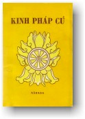

|
BuddhaSasana Home Page |
Vietnamese, with VU Times font |
|  |
KINH PHÁP CÚ Tác giả: Nārada
Mahāthera
|
|
Lưu ý: Ðọc với phông chữ VU Times (Viet-Pali Unicode) |
|
10. GẬY GỘC, HAY HÌNH PHẠT - DAṆḌA VAGGA Không nên sát hại
Tích chuyện Vì một vụ khiêu khích, nhóm "sáu vị Tỳ-khưu" tấn công nhóm khác "mười sáu vị", Ðức Phật hay được câu chuyện, cho ban hành giới luật có liên quan đến việc hành hung kẻ khác và dạy câu kệ trên. Chú thích Na haneyya na ghātaye = na pahareyya na paharāpeyya (Bản chú giải) Tất cả đều quý trọng đời sống
Tích chuyện Trong cuộc tranh chấp giữa một "nhóm Tỳ-khưu sáu người" và "nhóm khác mười sáu vị", nhóm sau có cử chỉ đe dọa. Ðức Phật dạy không nên xâm phạm đến người khác. Không nên hành hạ
Không nên gây tổn hại
Tích chuyện Ðức Phật thấy đám trẻ con dùng gậy đánh đập một con rắn. Ngài khuyên dứt chúng nó. Không nói lời thô lỗ
Hãy giữ im lặng
Tích chuyện Vài vị Tỳ-khưu thường nặng lời lăng mạ một vị khác và vị này trả lời lại. Ðức Phật khuyên các thầy không nên gây thù trả oán và giảng dạy về sự lợi ích của người biết giữ im lặng trước những lời lăng mạ của kẻ khác. Chú thích 1. Người hành đúng theo lời thực tiễn này, dầu còn tại thế, cũng được xem như đã đắc quả Niết-bàn. Không ai tránh được cảnh già, chết
Tích chuyện Trong nhà bà Visākhā, các thiếu phụ lớn nhỏ, đủ trang tuổi, đều thọ bát quan trong ngày giới. Khi được hỏi vì lý do gì, mỗi người giải thích phẩm hạnh đạo đức của mình theo một lối. Nghe xong quan điểm của từng người Ðức Phật giảng về bản chất vô thường biến đổi của đời sống. Chú thích 1. Trong câu kệ này, người chăn bò giống như tuổi già và sự chết. Bò như đời sống. Và đồng cỏ như cái chết, phía bên kia đời sống. Người hành ác bị quả dữ thiêu đốt
Tích chuyện Ðại đức A-La-Hán Mục-Kiền-Liên (Moggallāna) thấy một ngã quỷ có hình con trăn. Ðức Phật dạy rằng đó là hành động ác trong quá khứ. Kẻ xâm phạm người vô tội đi đến sầu muộn
Tích chuyện Vì một nghiệp xấu đã tạo trong tiền kiếp, Ðại đức A-La-Hán Mục-Kiền-Liên (Moggallāna) bị bọn cướp đánh đập đến chết. Về sau những tên cướp này bị vua bắt thiêu sống. Chú thích 1.- Những người vô hại và không gậy gộc - là chư vị A-La-Hán vô tội và không có khí giới. 2.- Ðau đớn nhức nhối - có thể làm chết được. 3.- Tài sản bị tiêu diệt - như buôn bán lỗ lã, mất tiền của, v.v... Lối sống ép xác không làm con người trở nên trong sạch
Tích chuyện Thấy một vị Tỳ-khưu có nhiều y, Ðức Phật quở rầy. Thầy giận, bỏ hết, chỉ mặc y nội. Ðức Phật thuật lại câu chuyện tương tợ đã xảy ra trong tiền kiếp của thầy và giảng dạy về sự vô ích của các lối tu khổ hạnh. Chú thích 1.- Ðến ngày nay, ở Ấn Ðộ vẫn còn tồn tại nhiều hình thức khổ hạnh. Lớp dơ dáy bên ngoài được vài người xem là dấu hiệu của bậc Thánh Nhơn. Ðức Phật không chấp nhận hình thức khổ hạnh khắt khe chỉ nhắm vào bề ngoài. Các Hội viên của Giáo hội những người sống độc thân mà Ngài sáng lập đi theo một con đường ở khoảng giữa Trung đạo - tránh hai cực đoan, một là khổ hạnh và đàng khác là lợi dưỡng. Giản dị, khiêm tốn, và tự ý nghèo là những đặc tánh chánh yếu của chư vị Tỳ-khưu, ngang hàng với lối sống sạch sẽ. 2.- Có người xem đầu tóc thắt bính, không bao giờ gội, là dấu hiệu của bậc thánh. 3.- Những người không bao giờ súc miệng đánh răng, và bôi bùn vào mình cho dơ. 4.- Chỉ nhịn đói suông không thể làm cho con người trở nên trong sạch. Các thầy Tỳ-khưu cũng nhịn ăn mỗi ngày, từ đúng ngọ đến sáng sớm hôm sau. 5.- Nằm dưới đất, không nằm giường. Các vị Tỳ-khưu cũng không nằm giường đẹp, giường cao. 6.- Cát bụi lắm lem - vì không tắm rửa. 7.- Hiện nay cũng còn những người lấy tro bôi vào người làm cho mình mẩy dơ dáy 8.- Cố gắng ngồi xổm - Ði cũng vậy, không đứng xổng người mà chỉ ngồi chồm hổm rồi nhạy nhảy để di chuyển, cũng không nằm ngồi như người thường. 9.- Hoài nghi - Không có niềm tin nơi Phật, Pháp, Tăng. Hình dáng bề ngoài không biến đổi người phàm ra thánh
Tích chuyện Một ông quan đại thần thấy người vũ nữ của mình té chết trong lúc đang vũ. Ông rất âu sầu, đến hầu Phật và được nghe Ðức Phật giảng Giáo Pháp. Sau khi nghe xong ông đắc quả A-La-Hán và nhập diệt luôn, mặc dầu lúc ấy ông ăn mặc rất sang trọng. Các thầy Tỳ-khưu bạch hỏi Ðức Phật có nên gọi vị ấy là Sa-môn không. Ðể trả lời, Ðức Phật dạy rằng đặc tánh thánh không tùy thuộc ở hình dáng bề ngoaøi 7. Chú thích 1.- Niyata - Bốn thánh đạo là Tu-Ðà-Huờn (Sotāpatī, Nhập Lưu), Tư-Ðà-Hàm (Sakadāgāmi, Nhứt Lai), A-Na-Hàm (Anāgāmi, Bất Lai) và A-La-Hán (Arahatta, Ứng Cúng). 2.- Bà Rhys Davids: "Bước vào Thượng Ðế", một câu rất lầm lạc, hoàn toàn xa lạ với tinh thần Phật giáo. Chú thích của bản chú giải là setthacariya, phẩm hạnh tối thượng. 3.- Tuyệt đối ôn hòa, không gây tổn hại bất luận chúng sanh nào. 4.- Bà-La-Môn - vì đã thanh lọc mọi nhiễm ô. 5.- Sa-môn - vì không còn chút bợn nhơ nào trong tâm. 6.- Tỳ-khưu - vì đã tận diệt mọi dục vọng. 7.- Một vị đại thần có việc sầu muộn, ăn mặc lộng lẫy, ngồi trên lưng voi nghe Ðức Phật giảng Pháp và đắc quả A-La-Hán. Cùng lúc ấy ông cũng chết luôn. Ðức Phật khuyên các tín đồ hãy đảnh lễ vị ấy theo hàng A-La-Hán. Khi các thầy Tỳ-khưu hỏi làm sao một vị đại thần ăn mặc lộng lẫy như vậy có thể đắc quả A-La-Hán, Ðức Phật đọc câu kệ trên, dạy rằng sự trong sạch đến với ta từ bên trong chớ không phải từ ngoài vào. Ðối chọi hẳn với câu trước câu này diễn đạt rõ ràng quan điểm của Phật giáo về đặc tánh thánh. Không phải cái hào nhoáng bề ngoài, mà chính sự thanh tịnh bên trong, là chánh yếu. Trên thế gian thật hiếm người khiêm tốn
Hãy nghiêm trì giới đức và tiêu trừ đau khổ
Tích chuyện Một thanh niên nghèo khổ, chỉ có một bộ đồ rách và một cái tô bể, treo tất cả tài sản của mình trên cây, rồi đến chùa xin thọ lễ xuất gia. Sau đó nhiều lần anh huờn tục, rồi trở lại Giáo hội. Cuối cùng, nghĩ tới hoàn cảnh khốn cùng mà anh phải chịu nếu còn huờn tục nữa, anh gia công hành thiền và đắc quả A-La-Hán. Ðức Phật dạy những lời trên để giảng về tâm bất mãn của anh trước kia và đức chuyên cần sau này. Chú thích 1. Khi hay biết tâm mình đang bị một ý nghĩ xấu xa xâm nhập một thầy Tỳ-khưu hay một cư sĩ biết tự trọng, phải cố gắng diệt trừ tức khắc. Câu này có nghĩa, người như thế thật hiếm hoi. 2. Thành đạt tri kiến và đạo hạnh - Minh Hạnh Túc, Vijjācaraṇa - là đầy đủ tám cái Giác, hay Minh, hay tri kiến; và mười lăm cái Hạnh(carana). Tám cái Giác (Vijjā) là: a) Thần thông (Iddhividha), b) Thiên nhĩ (Dibba-sota), c) Tha tâm thông (Cetopariya ñāna là tri kiến do đó hiểu rõ tâm của người khác), d) Thiên nhãn (Dibba-cakkhu), e) Túc mạng minh (Pubbe nivāsanussati, là tri kiến đo đó hiểu rõ những tiền kiếp, của mình và của tất cả chúng sanh), f) Lậu tận minh (Asavakkhaya, tận diệt các hoặc lậu, hay pháp trầm luân), g) Minh sát tuệ (Vipassanā) và h) Hóa tâm minh, (Manomayiddhi, tạo những hình ảnh trong tâm người khác). Mười lăm cái hạnh (Carana) là: Thu thúc trong gió lạnh, thu thúc lục căn, ẩm thực tiết độ, giữ tâm luôn luôn giác tỉnh, niềm tin chơn chánh, hổ thẹn trước điều ác, sợ hãi trước điều ác, nghe nhiều học rộng, tinh tấn, chánh niệm, và bốn từng thiền. Người tốt tự kiểm soát
Tích chuyện Một cậu bé con nhà gia giáo xuất gia, gia nhập Giáo hội. Ngày kia, trong khi đi trì bình, cậu thấy nông dân và thợ nề kiểm soát những vật vô tri vô giác như nước và gỗ. Cảh tượng ấy gợi ý cho cậu nghĩ đến tiềm năng hùng hậu của con người. Cậu cố gắng tham thiền và đắc quả A-La-Hán. Ðức Phật giảng về đức tánh tự kiểm soát lấy mình. Chú thích 1.- Xem Chú thích câu 80 -ooOoo- Ðầu
trang | Mục
lục | 01 | 02
| 03 | 04 | 05
| 06 | 07 | 08
| 09 | 10 | |
Chân thành cám ơn Tỳ kheo Minh Tịnh, Tỳ kheo Thiện Minh, và
Bác Phạm Kim Khánh
đã gửi tặng bản vi tính và các tư liệu cần thiết để thực hiện ấn bản Internet
này (Bình Anson, 01-2004).
last updated: 08-01-2004